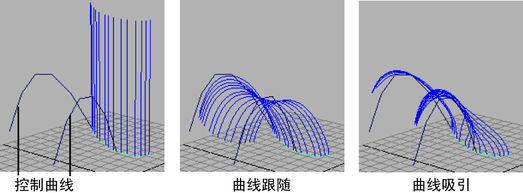
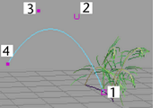

可以使用控制曲线（即：与笔划关联的 CV 或 EP 曲线）系统修改 Paint Effects 管的行为。可以将笔划管设置为跟随控制曲线并受控制曲线的吸引。

如果对场景进行动画设置，可以使用控制曲线，以使管对移动作出反应。当关键帧控制曲线的移动时，笔划管根据笔划的管设置对该移动作出反应。
如果创建许多间隔紧密的控制曲线，则笔划管将沿大致相互平行的方向卷曲；如果只有少数控制曲线，则笔划管将在控制曲线的吸引力作用下沿笔划前后倾斜。
若要创建一系列控制曲线，建议采用以下两种构造方法：
- 沿栅格绘制曲线，然后向上移动其控制顶点 (CV) 以形成垂直曲线
- 创建垂直构造平面，然后在垂直平面上绘制曲线
创建第一条控制曲线后，可以为其生成一系列副本，每个副本平移一段指定的距离。
在栅格上创建笔划控制曲线
- 创建一条或多条曲线，确保它们从笔划附近开始，并远离它进行操作。曲线 CV 的创建顺序会影响笔划管的行为。

- 在场景中单击鼠标右键以显示标记菜单，然后选择“控制顶点”(Control Vertex)。
- 使用“移动工具”(Move Tool)将 CV 升高到垂直弧中。
- 复制一条或多条控制曲线以创建一个序列，如下面的“复制控制曲线”步骤中所述。
在垂直平面上创建笔划控制曲线
- 在主菜单中，选择“创建 > 构造平面” >
 (Create > Construction Plane)。
(Create > Construction Plane)。
- 在“构造平面选项”(Construction Plane Options)窗口中，将“极轴”(Pole axis)指定为大致与笔刷笔划成直角，选择合适的平面大小，然后单击“应用并关闭”(Apply and Close)。
- 选定构造平面后，选择(Modify > Make Live)。
- 从距离笔刷笔划最近的一侧开始在垂直平面上绘制曲线。必要时移动 CV 来编辑曲线。
- 当曲线完成后，选择(Modify > Make Not Live)以取消激活垂直构造平面。
- 删除构造平面。
- 复制该曲线以创建一个序列，如下面的“复制控制曲线”步骤中所述。
复制控制曲线
- 选择原始曲线，然后选择“编辑 > 特殊复制” > (Edit > Duplicate Special)。
- 确定在栅格上沿哪个轴创建重复项，然后在“特殊复制选项”(Duplicate Special Options)窗口中，在相应的 X、Y 或 Z 字段中设置“平移”(Translate)值，以指定栅格空间中重复项之间的距离。还可以设置要创建的“副本数”(Number of copies)。
- 单击“特殊复制”(Duplicate Special)以创建一系列重复曲线。
- 根据需要移动曲线，以更接近地跟随笔刷笔划曲线的路径。
将笔刷管与控制曲线相关联
- 按住 Shift 键并选择笔刷笔划以及与之关联的控制曲线。
- 在“建模”(Modeling)菜单集中，选择(Generate > Curve Utilities > Set Stroke Control Curves)。
- 定义如何在(Tubes > Behavior > Forces)下，使用笔划笔刷节点中的“曲线”(Curve)选项使管对控制曲线作出反应。有关详细信息，请参见强制笔刷设置。